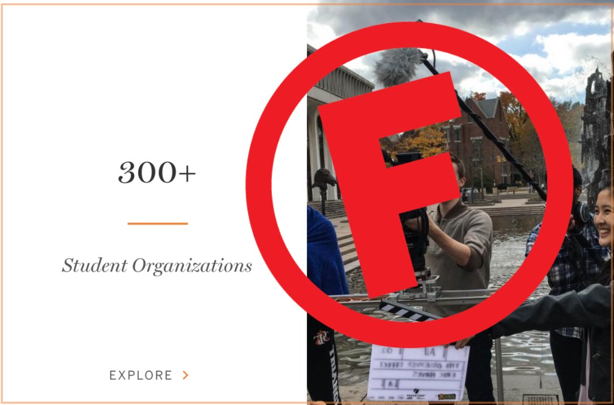

Wait?! I have to apply to clubs here??

“Unfortunately, because of an unusually large number of people trying out and a limited number of spots, we won’t be able to accept you this year.”
When that email appeared in my inbox from the mock trial team, I was devastated. I knew that many people didn’t make the cut and such is life. But that was the first major failure that I experienced in college, and quite honestly one of the first major failures that I had experienced in my nineteen years of life.
Before coming to Princeton, I was usually the one to beat the odds. What I have come to realize is that when you put a group of people who have all beaten the odds for most of their lives in the same space, the odds become exceedingly hard to overcome. My first instinct following my failure was to wallow. But I realized that was not getting me anywhere, so I tried to make the active choice to focus on how to grow from the experience.
The team had given me pointers before the callbacks, namely to use the room and to practice modulations in tone and volume for emphasis. I took those to heart and actively sought out debates and other speaking opportunities to work on my public speaking skills. I learned to take my initial failure and turn it into a strategic resource. You can too.
If you too have gotten rejected from an extracurricular activity on campus, give yourself a day or two to wallow; facing your emotions is healthy. But don’t stay in that zone for too long. Practice self-compassion and use the lessons you learned from your failure to face your next challenge.
–Alexandra Orbuch ‘25
I don't know if I want to join clubs?

Dillon gym is packed with crowds of people. Cardboard signs adorned with “Mock Trial,” “Cycling Club” and “Classics Club” sit atop a long row of tables. I roam the booths for each club. To say that I feel overwhelmed is an understatement. There are so many student groups at this university. I have no idea which ones to join.
If you experienced a similar feeling at the beginning of this year, know that you were definitely not the only one. One piece of advice that I got which really helped me navigate the situation was to put my name down on a bunch of club lists and attend the first meetings. I did just that and found that talking to current club members and seeing how different student groups operate really gave me a sense of what I was interested in.
Upperclassmen told me not to feel obligated to remain in an extracurricular activity if I did not find it to be meaningful. They said that it can be easy to feel pressured to continue attending meetings but to not let that sway my decision. I share this advice with you in hope that it will help you on your extracurricular journey here at Princeton.
–Anonymous
I have more clubs than classes

Sometimes it can be tough to balance all of your extracurriculars in addition to tackling classwork. I know that has definitely been the case for me. I have a job and I am writing for a host of campus publications among other things.
Sometimes it can feel very overwhelming and nearly impossible to juggle everything. If you relate to any of this, know that you are definitely not alone. Being a Princeton Student is no easy task. Here are some things that I have found to be helpful in dealing with balancing it all.
First off, I make sure to schedule out my days so I know exactly what I need to do and when. I highly recommend creating a schedule. In addition, I urge you to make sure that the extracurriculars you were involved with really ignite your passions. It will be hard to focus on accomplishing tasks if you do not enjoy what you are doing.
–Alexandra Orbuch ‘25
I don't do anything other than school

So it is already December and reading period has begun. Yet you find yourself feeling like you are still not really involved on campus outside of your classes.
If any of that rings true for you, don’t despair. Try to practice some self-compassion. Navigating Princeton is difficult, to say that least. You used your first semester to try and settle in academically. There is nothing wrong with that. Now that the first semester is coming to a close, you no doubt have a better sense of how to manage your coursework than when you stepped through FitzRandolph Gate in August.
Looking ahead, there are a few things you can do to get involved on campus. First, take a few minutes to sit down and list your interests and passions. Are you a writer? Do you enjoy playing soccer? Does news coverage appeal to you? Once you have done that, take a look at the list of the organizations on campus and see which ones line up with your areas of interest. When you have put together a list, reach out to the heads of the groups that you think you would enjoy. Ask if there is room for new members. And if you get some no’s along the way, know that there is always next year!
–Alexandra Orbuch ‘25